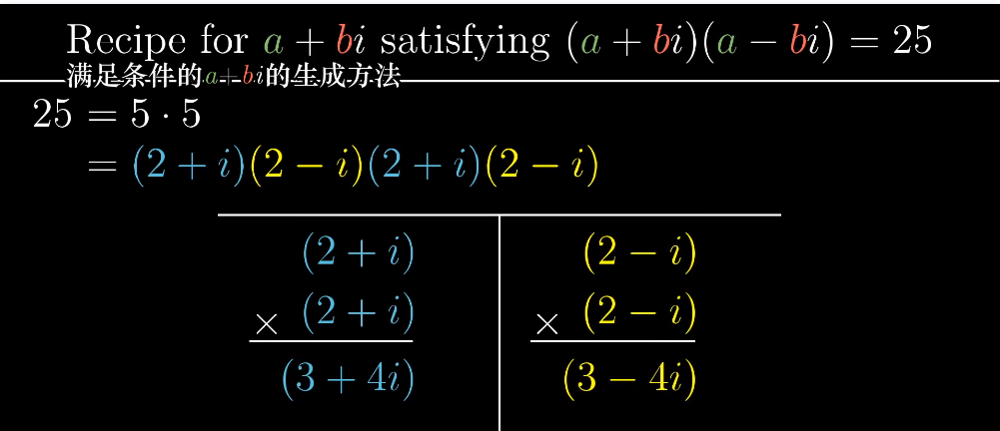
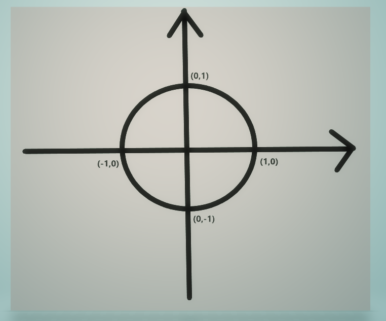
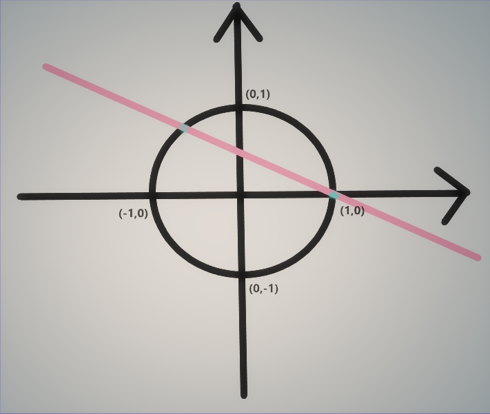
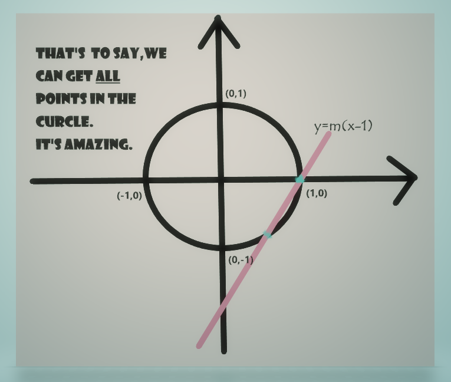
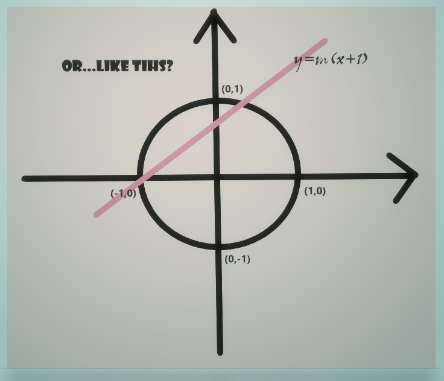
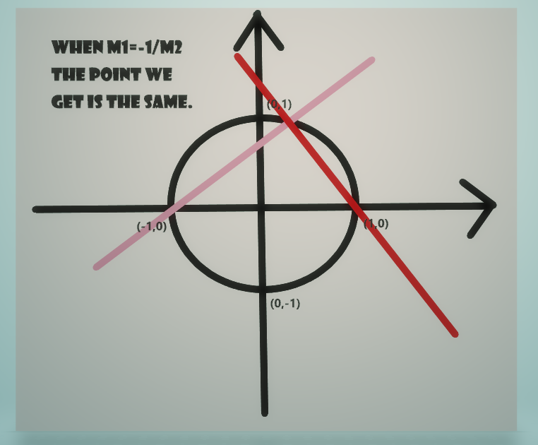
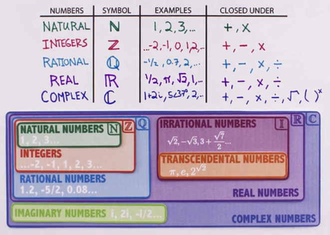
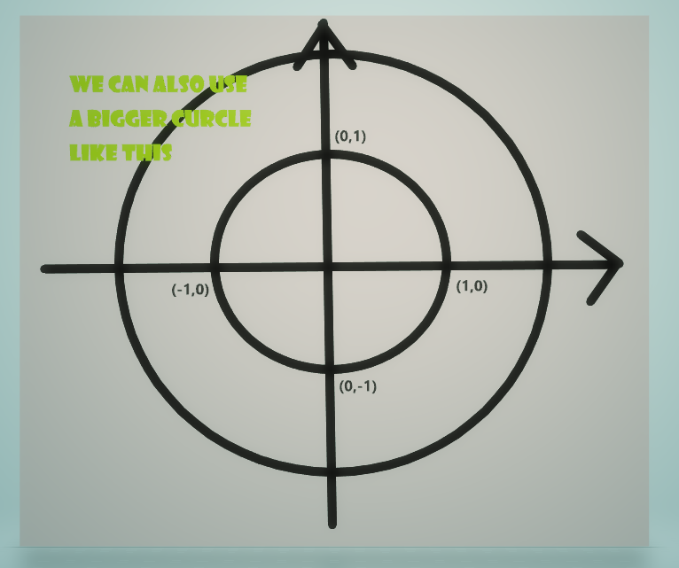

勾股数组¶
写在前面¶
我们大概老早就知道勾股定理，它大概就长这样：
嗯，的确够简单的。
而且我们清楚地知道它的一个基本应用——知道Rt\Delta的两边长，求第三边。这大概初一就学了。
对于不知道勾股定理的童鞋们，不了解没关系，因为这里没有三角形，也不是探讨怎么求第三边，我们只探讨勾股数组。
这里的a \equiv b(mod\ c)其实就是a\%c=b\%c，a|b其实就是b\%a=0，希望小白们不要看不懂。
如果真的看不懂，可以先学习同余、约数、素数的知识。
勾股数组¶
什么事都得从定义开始。来看看百度百科教会我们什么。
定义——勾股数组¶
一般地，若三角形三边长a，b，c都是正整数，且满足a，b的平方和等于c的平方，那么数组（a，b，c）称为勾股数组。勾股数组是人们为了解出满足勾股定理的不定方程的所有整数解而创造的概念。
嗯，够简单的。不过有些人总是喜欢把它弄得高大尚些，把它叫做“毕达哥拉斯三元组”，其实是一个玩意儿，只是后者听起来更加牛。这不必深究，知道它就是勾股数组即可。而勾股数组也就是把三个数a,b,c(a^2+b^2=c^2)用小括号括起来而已。很简单吧？我们举几个栗子——
| a | b | c |
|---|---|---|
| 3 | 4 | 5 |
| 5 | 12 | 13 |
| 6 | 8 | 10 |
| 7 | 24 | 25 |
诶，(3,4,5)、(6,8,10)看着好像！emmm
实际上它们的本质都是勾三股四弦五 这样就不好玩了嘛）很明显，如果一个勾股数组中每个数同乘一个正整数，得到的三元组还是一个勾股数组。It's very easy.这里省略证明过程。
所以说，勾股数组有无穷个。这就不好玩了嘛，只要知道一组勾股数组，就可以推出inf个勾股数组。。。
最有意义的勾股数组，就是其他勾股数组\times d(d > 1))不能得到的勾股数组。只要找到它们，其他的勾股数组都可以由它们乘某个数表示出来。
因此，我们引入本原勾股数组的概念。不过很遗憾，百度百科词条里没有。
定义——本原勾股数组¶
本原勾股数组(简写为PPT)是一个三元组(a,b,c)，其中a,b,c没有公因数，且满足a^2+b^2=c^2
——摘自Joseph H. Silverman《A Friendly Introduction To Number Theory》
\small \text{插句小广告，这本书对于学习数论还是很不错的，中文译名为《数论概论》。}
给出一些本原勾股数组。
(3,4,5)(5,12,13)(8,15,17)(7,24,25)......
它有一些有趣的性质。如果你仔细观察，你可能会发现前两个数似乎总是一奇一偶。。。
这个命题是正确的，来看看如何证明。
当a、b均为偶数时，c必然为偶数，它显然不是一个本原勾股数组，a、b、c有公因数2。
当a、b均为奇数时，c必然为偶数，设a=2x+1,b=2y+1,c=2z。
然后我们就可以通过\frac{a^2+b^2}2、\frac{c^2}2奇偶性得出这也不成立。请读者自行完成证明。
如何找本原勾股数组¶
只要找出本原勾股数组，其它勾股数组都可以求出。如何找呢？ 为了便于大家理解，这里写的详细些）
为了方便，我们认为本原勾股数组(a,b,c)中，a为奇数，b为偶数，c为奇数。
a^2+b^2=c^2
a^2=c^2-b^2=(c+b)(c-b)
我们从这方面考虑。(c+b)与(c-b)不应该存在>1的公约数。
证明：
我们知道，任何一个大于1的正整数都可以表示成固定几个素数的积，也就是长这模样——
a=p_1^{k1}\times p_2^{k2}\times p_3^{k3}\times p_4^{k4}\text{......}
a^2既然为平方数，那么如果把a^2分解质因数，对于任意ki，都有ki \equiv0(mod\ 2)。
前面提过，gcd((c+b),(c-b))=1，所以如果p_1|(c+b)，p_1|(c-b)是不可能成立的。
我们暂时抛开繁琐的证明，尝试想象。假设你的手里有一个数a^2。看看能不能把它分解成2个没有公因数的数。
啊，不错，分成的这两个数就是(c+b)与(c-b)。要怎么分呢？我们举个栗子。试试分解10^2?
先分解质因数。10^2=2^2 \times 5^2
我们选取一些质数给(c+b)，剩下的质数全部给(c-b)
值得注意的是，我们仅探讨正整数范围内，分解要满足(c+b)>(c-b),并且都是偶数
嗯，这好像只有一种分法\to c-b=2^2,c+b=5^2
大家可以自己再选几个数，动手尝试。我们可以发现，c-b如果含有质因数p,c-b肯定也含有因数p^2。c+b也是如此。所以，(c-b)与(c+b)一定是完全平方数。
来吧，冲向胜利！
我们设s^2=c+b,t^2=c-b(s>b)
我们把上面俩式子加一加、减一减——哇！
2c={s^2+t^2},c=\frac {s^2+t^2}2
2b={s^2-t^2},b=\frac {s^2-t^2}2
\because a^2=(c+b)\times(c-b)
\therefore a^2=s^2\times t^2
\therefore a=st
勾股数组定理¶
每个本原勾股数组(a,b,c)(其中a为奇数，b为偶数)，都可从如下公式得出。
\large a=st,b=\frac {s^2-t^2}2,c=\frac {s^2+t^2}2
其中s >t \ge 0是任意没有公因数的奇数。
当然，以上证明是不完整的。我们还要证明a、b、c没有公因数。
我们运用反证法，假设gcd(st,\frac{s^2-t^2}2,\frac{s^2+t^2}2)\not=1
我们假设质数p|(st),p肯定为s或t的一个质因数。
假设p为s的一个质因数，p肯定不为t的质因数。这十分明显，因为s、r互质嘛）
\frac{s^2-t^2}2=\frac{(s+t)(s-t)}2
由s\%p=0,t\%p\not=0可知(s+t)\%p\not=0,(s-t)\%p\not=0
\therefore (\frac{s^2+t^2}2)\%p\not=0
若p为t的质因数，证明过程几乎和上面一模一样，请读者自行完成。
所以，对于st的任意质因数，都不能整除\frac{s^2-t^2}2,即gcd(st,\frac{s^2-t^2}2)=1
综上所述，gcd(st,\frac{s^2-t^2}2,\frac{s^2+t^2}2)\not=1不成立，原命题正确。
QED.
如何找勾股数组¶
我们会找本原勾股数组，自然找出了所有勾股数组。
不过，还有一种神奇的方法，已知c，可以在O(\sqrt c)的时间内求出满足a^2+b^2=c^2的a、b个数。
这里放个链接，里面讲的还是很不错的QAQ~~(肯定讲的比我好)，强烈建议童鞋们去Have a look。。
~~顺便切道紫题P2508 [HAOI2008]圆上的整点
前置知识¶
高斯整数¶
高斯整数（gaussian integer）是实数部分（实部）和虚数部分（虚部）都是整数的复数。也就是复平面中点集{a+bi|a,b 都是整数}。所有高斯整数组成了一个整环，写作Z。它是个不可以转成有序环的欧几里德整环，所以是唯一因子分解整环。 也就是在这个整环中，如同整数集一样，可以存在唯一因子分解定理。 ——摘自百度百科
费马平方和定理¶
奇素数p可以表示为两个正整数的平方和，当且仅当p是4k+1型的。并且在不考虑两个正整数顺序的情况下，这个表示方法唯一。——摘自上面链接的评论
奇质数能表示为两个平方数之和的充分必要条件是该质数被4除余1——摘自百度百科
由于费马平方和定理证明比较复杂，我找到的一些简单的证明都是片面或错误的，完全的证明似乎要分5步，请自行了解，这里不仔细讲。
a^2+b^2=c^2，或者更广泛地，a^2+b^2=c(\text{a、b、c都为整数(不一定是正的)})(这里我们选后者为例)可以转换为在平面直角坐标系中，一个以O为圆心、以\sqrt c为圆心的圆经过几个格点。(这里为了更方便，a、b、c都为整数，不一定要正整数，可以是0、负整数)。
我们把圆放在复数平面中(x轴为实数轴，y轴为虚数轴)。
然后就有惊喜。注意：以下叙述都是在复数平面中，不再是平面直角坐标系）
我们举个例子——c=25
在上面那个链接视频中提到XX的模，我的理解为XX与原点的距离）
很明显，以\sqrt c为半径的圆经过的格点有
(0+5i),(3+4i),(4+3i),(5+0i),(4-3i),(3-4i),(0-5i),(-3-4i),(-4-3i),(-5+0i),(-4+3i),(-3+4i)共12个。(3+4i),(3-4i)这类关于实数轴对称的点互为“复共轨”。(3+4i)的模是5，设它与实数轴呈\alpha,(3-4i)的模也是5，它与实数轴呈-\alpha，很明显，它们相乘得到的结果与实数轴呈\alpha - \alpha=0度，而(3+4i)(3-4i)的模(其实和数值是一样的)为25，也就是c。很明显，像这样格点(也就是(a+bi)(a-bi)=c)都是在圆上的。这样，问题就转换为多少个高斯整数与其复共轨之积为c。
怎么解决呢？这就用到前置知识中的费马平方和定理，不熟悉的童鞋可以再去看看。
我们把不能再分解的高斯整数称为“高斯素数”。事实上，高斯素数有3种：
- 4k+3型的素数
- 4k+1型素数分解出的两个高斯整数
- 2
根据费马平方和定理，一个4k+1型的素数可以分解成(a+bi)(a-bi)，很明显，这两个素数互为复共轨。
如果一个数质因子中只有4k+1型的素数，像我们举例的25，那就好办了。

像这样，将它分解成若干高斯素数的乘积(很明显，这是唯一的)，并将互为复共轨的一对高斯素数写两边，左边所有高斯素数的乘积与右边的乘积互为复共轨。要使左右乘积继续保持互为复共轨，只能交换一对互为复共轨的高斯素数的位置（这个不难理解）。我们可以这样考虑，对于相同的高斯素数(我指的是成对的)，（就比如(1+2i)），它在左边可以放0个，放1个，放2个……当然，不是你想放就随便放的，把1个放到左边的同时，要把它的复共轨移一个到右边，以保持左右乘积仍互为复共轨。这样，如果总共有p个，就有(p+1)种放法。然后继续处理下一个高斯素数(当然，处理过一个高斯素数，不必再处理它的复共轨)。最后，为了避免重复，我们只取左边的乘积作为结果。然鹅，事情并非这么简单。如果你这么算，25得到的结果为(2+1)=3。才这么点？事实上，如果你在左、右分别乘上-1与-1、i与-i、-i与i，得到的结果是不同的，而且很显然，它们都是对的。但是它们的本质是相同的。就好比3\times4=12，(-3)\times(-4)=12一样。所以，最后的结果要乘4。
4k+3型的素数已经是高斯素数，而且它的复共轨就是本身，因此，只能将它平均分配给左边和右边。如果某个这种素数有奇数个，不能平均分配给左右，那很遗憾，一个解也没有。
对于素数2，它能分解成两个高斯素数(1-i)(1+i)，但是，你会发现，-i\times(1-i)=(1+i)，如果将(1-i)与(1+i)互换位置，就相当于一个乘-i，另一个乘i，它们的本质还是没有变，所以，素数2不影响结果。
来看看[HAOI2008]圆上的整点，因为这题中半径r为正整数，所以r^2所含的4k+3都是成对出现的，也就是说如果c^2\%p=0，那么c^2\%p^2=0，所以直接忽略2与4k+3型素数。如何处理4k+1的素数，请参照上文。（找质因数不必讲了吧
代码¶
1 2 3 4 5 6 7 8 9 10 11 12 13 14 15 16 17 18 19 20 21 22 23 24 25 | #include<bits/stdc++.h> using namespace std; #define LL long long LL R, N, ans(1); int main(){ scanf( "%lld", &R ); N = R; if ( R == 0 ){ printf( "1\n" ); return 0; }//点圆 while( R % 2 == 0 ) R >>= 1;//质因数2不会影响答案 for ( LL i = 3; i * i <= N; i += 2 ){ LL cnt(0); while( R % i == 0 ) cnt++, R /= i;//数出i的幂 if ( i % 4 == 1 ) ans *= ( cnt * 2 + 1 );//i是可以分解成2个高斯素数的质因数，而且在N中它的幂是cnt,它在N^2中它的幂就是2*cnt。 } //很明显，> sqrt(N) 的质因数最多有一个 if ( R > 1 && R % 4 == 1 ) ans *= 3; //3 = 1 * 2 + 1 printf( "%lld", ans << 2 ); //*1, *(-1), *i, *(-i) return 0; } |
一些其他性质¶
这里还是假设本原勾股数组(a,b,c)中，a为奇数。
- c-a=2t^2,t\text{为一整数}
这个证明思路与上面十分相似。只要把a^2移到右边instead of b^2 即可。
Very easy. 给个开头，请自行证明。当然，这也能在所有勾股数组中适用)
$$ b2=c2-a^2=(c+a)(c-a) $$
- a \equiv 0(mod \ 3)\text{或}b \equiv 0(mod\ 3)
这里感谢@LJC00118Rank1奆佬教会我如何证明。这里声明一下，我绝对没有照搬照抄)
证明：有一个定理a^2\%3=0\text{或}1，这十分好证，分类讨论即可，这里省略证明。
假设该定理不成立，
即a \not= 0\text{且}b\not=0
\therefore a^2\%3=1
b^2\%3=1
\therefore(a^2+b^2)\%3=2
\therefore c^2\%3=2
这与c^2\%3=0\text{或}1矛盾，因此该定理成立
QED.
还有两条不常用的性质，了解即可。
- a^4b^4+b^4c^4+c^4a^4=L^2
- a^8+b^8+c^8=2L^2
关于费马大定理¶
费马在某本书的边沿上写道。
不可能将一个3次方分成两个3次方之和；一个4次方不可能写成两个4次方之和；一般地，任何高于2次的幂不可能写成两个同次幂之和.我已发现一个美妙的证明，这里空白太小写不下
也就是说，a^n+b^n=c^n(n>2)没有正整数解。这就是赫赫有名的费马大定理。
W(￣_￣)W。。。这是一个世纪难题，1986年才被解决。。。大家了解即可，了解即可，如果您证出来了，我只能膜拜大仙。如果真的碰到类似于这样的式子，直接拿出来用就可以了，不要傻fufu地去证明。
最后的补充¶
这里再增加一些知识点。这里，我们通过其他方法推出勾股数组定理。
a^2+b^2=c^2 \to (\frac ac)^2+(\frac bc)^2=1
这样就转换为如何找出x^2+y^2=1的所有有理数解

我们以(0,0)为圆心，r=1为半径画圆。
很明显，点(1,0)是一个解。我们过点(1,0)作直线y=mx-m


然后就可以解方程组辣
m(x-1)=y
x^2+y^2=1
得(m^2+1)x^2-2m^2x+m^2-1=0
由于x=1是一个解，我们可以将式子分解。
得到(x-1)[(m^2+1)x-(m^2 - 1)] 算了半天 呼。。。)
(m^2+1)x-(m^2-1)=0
(m^2+1)x=m^2-1
x=\frac{m^2-1}{m^2+1}
y=\frac {-2m}{m^2+1}
当然，如果选取(-1, 0)也是可以的，这样求出来的答案有点不一样。

x=\frac{1-m^2}{1+m^2}
y=\frac {2m}{1+m^2}
这两个式子几乎是等效的。如果设前一个式子中的m为m_1，后一个为m_2
当m_1=-\frac 1 {m_2}时，这两个式子求出的坐标是一样的。（当然，前提是m不为0）

十分神奇，right？ 通过这种方式，还可以用来描述所有勾股数组。
我们令m=\frac vu
代入求值（下面的式子）——
\huge x=\frac{1-m^2}{1+m^2}=\frac{1-(\frac vu)^2}{1+(\frac vu)^2}=\frac{u^2-v^2}{u^2+v^2}
\huge y = \frac{2(\frac vu)}{1+(\frac vu)^2}=\frac{2uv}{u^2+v^2}
这样我们得到一组勾股数。
(2uv,u^2-v^2,u^2+v^2)
之前忘了说明这是有理数，现在补上。给大家一个表格(来源:https://www.bilibili.com/video/av29019452/?p=9)  也就是说，有理数(RATIONAL)与有理数经过加减乘除运算后还是有理数，由于平方运算可以看成一个有理数自己乘自己，属于乘法 （整数次幂都可以看成乘法），所以，上述式子原来的变量只涉及实数的加、减、乘、除运算，得到的结果还是有理数。只要你定义的m满足是有理数，上面提及的所有变量都是有理数。
所有勾股数组都可以通过该式推出。当然，有一些限制）
我们发现，如果设u=\frac{s+t}2,v=\frac{s-t}2,又可以与之前的勾股数组定理相结合。
当然，更大的圆也可以算，请自己尝试——

这些图除了“如何找勾股数组”那张 都是自己画的QAQ 用英文的主要原因是字体不支持中文QAQ
最后的最后¶
由于我很弱，所以可能会出错，欢迎指正错误QAQ。